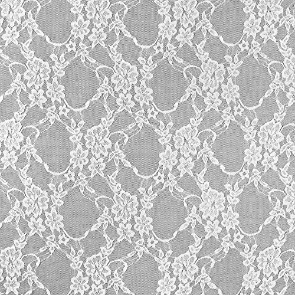

Présentation
Bonjour et bienvenue sur mon site !
Après avoir découvert le monde du jeu vidéo, j’ai fait un DUT technique de commercialisation à Amiens, dans le but de travailler dans ce domaine, en marketing, car je n’avais aucune compétence en informatique.
Après deux ans d’études, je me suis rendue compte que le commerce n’était pas ma voie de prédilection, et après avoir aidé des amis à coder un petit jeu vidéo pendant l’été, je me suis trouvée emportée dans le monde passionnant de l’informatique.
Et me voici donc, en première année de BUT Informatique à Lannion !
L'année prochaine, je poursuivrais mon parcours à l'IUT Informatique de Bordeaux, je cherche donc un stage dans le secteur.
Et à plus long terme, j'aimerais travailler dans le secteur du jeu vidéo ou de l'astronomie !
En explorant mon site, vous trouverez certains des projets que j’ai réalisés, et n'hésitez pas à me contacter pour parler de projets passionnants !!
Passions
-
Astronomie
L’astronomie est un sujet qui m’intéresse énormément, bien que j’y connaisse peu. Travailler dans ce domaine était un de mes rêves d’enfants (grande fan de Doctor Who).

-
Jeux vidéos
Je suis passionnée de jeux vidéo depuis plusieurs années maintenant. Je joue très souvent après les cours, principalement à League of Legends (level 600+). C’est d’ailleurs ce centre d'intérêt qui m’a fait me tourner vers l’informatique.

-
Pokemon
Depuis petite, je collectionne les cartes Pokemon et je regarde l’anime. Et c’est un centre d'intérêt qui me suis encore aujourd’hui, car je continue de collectionner les cartes.

Etudes
-
BUT Informatique
Institut universitaire de technologie, Lannion
1ère année
-
BUT Technique de commercialisation
Institut universitaire de technologie, Amiens
Parcours stratégie de marque et événementiel
-
BAC Général
Lycée des Graves, Gradignan
Spécialité SVT et Physique chimie, mention bien
Expériences
Job étudiant : représentante des élèves au CROUS
octobre 2024 a juin 2025, Lannion
Pendant ma première année de BUT info, j’ai eu un job étudiant à côté. Mes principales missions étaient d’organiser et d’encadrer des évènements au sein de l’établissement crous. En m’occupant notamment de la communication, et du contact avec les étudiants.
Compétences développées :
- Organisation d’évènements
- Prise de parole en public
Job d'été : agent d'entretien
juin a aout 2024, Bordeaux
L’été 2024, j’ai travaillé dans le nettoyage de train. Nous étions en équipe et devions faire une tâche précise, en un temps limité.
Compétences développées :
- Gestion du stress
- Travail en équipe
Stage de deuxième année de BUT TC : assistante marketing a Definima
avril a mai 2024, Gradignan
J’ai eu la chance, pour mon stage de deuxième année de DUT TC dans l’agence web Definima, à Gradignan. Lors de ce stage en tant qu’assistante marketing, j’ai découvert le monde du référencement (SEO, SEA), avec une multitude d’outils d’analyse. J’ai aussi créé des articles pour des sites clients, et le site de l’entreprise elle-même.
Compétences développées :
- Analyse
- Travail d’équipe
- Autonomie
Stage de première année de BUT TC : conceillère de vente a Gamecash
mai 2023, Amiens
J’ai effectué mon stage de première année de DUT TC a Game Cash, une franchise qui s’occupe d’achat et de vente de jeux vidéo et d’accessoires. J’ai eu la chance de travailler dans cette équipe pendant un mois, ou j’ai pu développer plusieurs compétences.
Compétences développées :
- Travail d’équipe
- Vente
- Organisation d’un espace de vente
- Gestion de la relation client
- Prise de parole en public
Bénévole a l'association FSA
2015 a 2018
Pendant une grande partie de mon collège, je participais à la vie de l’association, en faisant des collectes et des distributions de produits d’hygiène, principalement pour les femmes, mais surtout les personnes dans le besoin. J’ai d'ailleurs participé à l’organisation, à la mise en place et au déroulement d’une collecte de produits au sein de mon collège.
Compétences développées :
- Esprit d'équipe et management d'équipe
- Organisation et mise en place de projet
Langages
C
Bonne maitrise
Python
Bonne maitrise
Sql
Bonne maitrise
HTML
Bonne maitrise
CSS
Bonne maitrise
PHP
Débutante
Java
Bonne maitrise
Java fx
Débutante

Projets Informatique

Snake dans un terminal
Compétence développée : Développer une application informatique
Snake automatique
Compétence développée : Optimiser
Gestion de fichiers
Compétence développée : Administer système informatique
Ligue de Football
Compétence développée : Gérer des données
Site pour les JO
Compétence développée : Conduire un projet
Analyse de l'entreprise LEGO
Compétence développée : Travailler dans une équipe